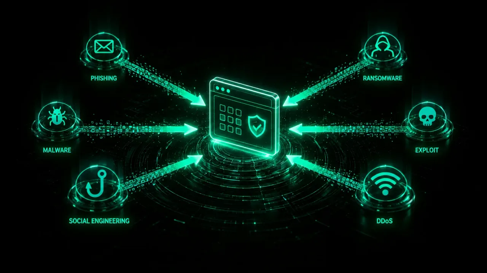

Knowledge that strengthens your defense.
In-depth guides, analyses and practical insight on threats, vulnerabilities, and the tools security teams rely on. A guided path from foundations to working practice.

Adversaries, campaigns and how to think in threats, attacks and risk.
Discover, prioritise and understand the flaws that actually matter – OWASP Top 10.
Secure web apps and APIs – and the proxies used to test them end to end.
How traffic really flows – IP, TCP, DNS, TLS – and where an attacker can lie.
Reverse behaviours safely on intentionally-vulnerable, disposable targets.
Detect, contain and recover – a calm, ordered playbook for the first 24 hours.
Practical knowledge for today's defenders.

Digital forensics and DFIR explained.
Digital forensics and DFIR explained: the incident-response lifecycle, chain of custody, order of volatility, the core tools, and a host-triage walkthrough.

What a red team actually does.
What a red team really does: goal-based engagements, authorization and Rules of Engagement, the attack lifecycle mapped to MITRE, C2 tooling, and how to start.

Investigate a suspicious domain: a workflow.
A reproducible, passive OSINT workflow to investigate a suspicious domain: OPSEC, reputation, WHOIS, DNS, certificates, pivoting, and documenting IOCs.

Registry vs registrar vs ISP vs hosting.
Registry, registrar, ISP, hosting – four layers people constantly confuse. Who controls what, how to find each for any domain, and who to report abuse to.

Sigma and YARA rules explained.
Sigma rules detect threats in logs; YARA hunts malware in files. A practical, example-driven guide to detection-as-code and how to convert and test rules.

Indicators of Compromise (IOCs) explained.
What an indicator of compromise is, the main IOC types with examples, atomic vs behavioral, IOC vs IOA, the Pyramid of Pain, decay, and how intel is shared.

What is WHOIS and how to read it.
WHOIS explained: what a domain lookup returns, how to read every field, why GDPR redacts it, RDAP, IP WHOIS via the RIRs, and tools to investigate a domain.

Domains vs subdomains: how to enumerate them.
What a domain is made of, why subdomains are an attack surface, and how to enumerate them – passive and active – with crt.sh, Amass, subfinder and more.

SOC team roles and tiers explained.
Inside a SOC: the tier model, every role from Tier 1 analyst to SOC manager, how alerts escalate, shift work, and the realistic path in and up.

SOC tools: SIEM, SOAR, EDR and more.
The SOC toolstack by category – SIEM, EDR/XDR, SOAR, NDR, threat intel, sandboxes and enrichment – with real OSS and commercial tools linked.

What is a SOC? Security Operations Center.
A SOC is the team that monitors, detects, triages, and responds to threats around the clock. What a SOC really does, how an alert flows, and how to run one.

What is OSINT? Tools and workflow.
OSINT turns open, public sources into intelligence, not hacking. The intelligence cycle, -INT disciplines, legal limits, OPSEC, a workflow and real tools.

Shodan and Censys explained.
Shodan and Censys are search engines for internet-exposed devices – what they index, real query examples, the legal line, OPSEC and free-tier limits.

Cybersecurity 101: the words that mean what.
Threat, vulnerability, exploit, risk – four words that get used interchangeably, and the one mental model that finally separates them.

How networks actually work.
IP, TCP, DNS, TLS – traced through a single curl request. What each layer adds, and which ones an attacker can lie at.

Linux fundamentals for security, the working subset.
The 25 commands you will type every day, the five you will type in a hurry, and the file permissions that decide who owns the box.

Cryptography you can actually use.
Hashing vs encryption, symmetric vs asymmetric, and the three primitives you should reach for before rolling your own anything.

Threat modeling with STRIDE.
We pick a tiny web app and walk it through STRIDE, then write the prompt that gets an LLM to do 60% of the same work as a reviewer.

How to start in cybersecurity: the real roadmap.
The learning order that actually works, the official roadmap.sh path worth following, and the real job roles waiting at the other end.

Red team, blue team, purple team.
Red attacks, blue defends, purple closes the loop between them. What each one actually does day to day, and how they map to real roles.

How to actually learn cybersecurity.
Why tutorial-hell happens, what active learning looks like in this field, and a weekly rhythm that survives past month two.

TLS certificates and Certificate Transparency, explained.
What a certificate actually proves, the chain of trust behind the padlock, and how CT logs make a mis-issued certificate impossible to hide.

Multi-factor authentication, explained.
The three MFA factor categories, why SMS is the weakest, how FIDO2 hardware keys resist phishing, and how MFA-fatigue prompt-bombing attacks actually work.

Public Key Infrastructure, explained.
How PKI actually works: key pairs, digital signatures, certificate authorities and the chain of trust, and where TLS, code signing, and S/MIME really use it.

CVE vs CVSS: what's the difference?
CVE identifies a vulnerability; CVSS scores its severity. How MITRE's catalog and FIRST's 0-10 scoring system work together, decoded with a worked example.

Cyber Threat Intelligence (CTI), explained.
The four tiers of cyber threat intelligence, the intelligence cycle, STIX/TAXII sharing standards, and how CTI drives MITRE ATT&CK-mapped detection engineering.

Social engineering, explained.
Pretexting, phishing, vishing, smishing, baiting, and tailgating – the core social engineering techniques and the psychological principles behind them.

SIM swap attacks, explained.
How SIM swap and port-out fraud actually works, why phone numbers became a weak link in account recovery, and how to lock down a number against it.

How a VPN actually works, and what it doesn't hide.
How VPN tunneling actually works, what it hides from your ISP and local network, and why it does not make you anonymous – the provider can still see everything.

Stateful vs stateless firewalls, and NGFW explained.
Stateless packet filters judge each packet alone; stateful firewalls track connections in a state table; NGFWs add deep packet inspection – with a worked example.

The -INT disciplines: where OSINT fits among them.
Where OSINT fits among the intelligence disciplines: SIGINT, HUMINT, GEOINT, MASINT, and TECHINT – what each collects, who uses it, and how they overlap.

AI in cybersecurity: attack and defense →
Where artificial intelligence actually shows up in a defender's day-to-day – its own sub-pillar, worth a dedicated visit.